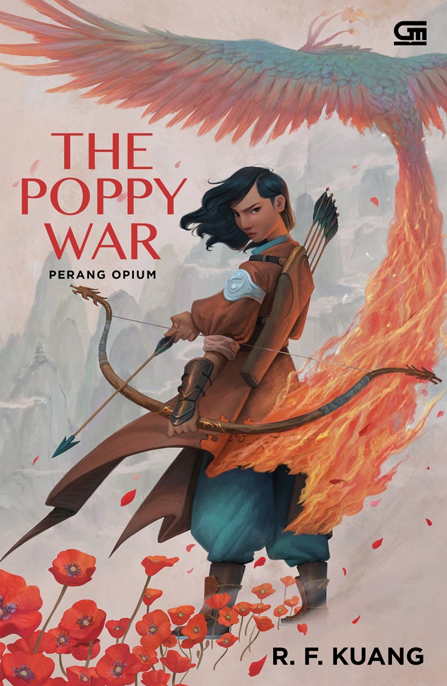
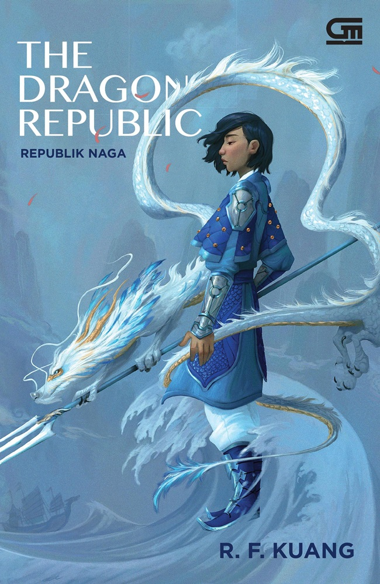

Rebecca F. Kuang (born May 29, 1996) is an American fantasy novelist. Her first novel, The Poppy War, was released in 2018, followed by the sequels The Dragon Republic in 2019, and The Burning God in 2020. Kuang released a stand-alone novel, Babel, or the Necessity of Violence in 2022. Her latest release is Yellowface, a satirical novel which was published in 2023. Kuang holds an undergraduate degree in international economics with a minor in Asian Studies from Georgetown University and graduate degrees in Sinology from Magdalene College, Cambridge, and University College, Oxford, and is currently pursuing a PhD at Yale University.[1]
Kuang has received a number of accolades as an author. Babel debuted at the first spot on The New York Times Best Seller list, and won the Blackwell's Book of the Year for Fiction in 2022 along with the 2022 Nebula Award for Best Novel. In addition, Kuang has won the Compton Crook Award, the Crawford Award, and the 2020 Astounding Award for Best New Writer, and has been a finalist for the Nebula, Locus, World Fantasy, Kitschies, and British Fantasy awards for The Poppy War.
Early life and education
Kuang was born May 29, 1996, in Guangzhou.[2] She immigrated to the United States with her family when she was four years old.[3][4] Her father grew up in Leiyang, in Hunan province, and her mother grew up in Hainan province.[5] Her maternal grandfather fought for Chiang Kai-shek.[5] Her father's family experienced the Japanese occupation of Hunan.[5][6]
Kuang grew up in Dallas, Texas and graduated from Greenhill School in 2013.[7] She attended Georgetown University, majoring in history,[8] attracted by the college's well-known debating team after winning the Tournament of Champions.[3] While in college, Kuang, aged 19, began writing Poppy War during a gap year in China, where she worked as a debate coach; the book was published shortly before her 22nd birthday.[3][9] Kuang graduated from the Odyssey Writing Workshop in 2016 and attended the CSSF Novel Writing Workshop in 2017.[4] She graduated from Georgetown's School of Foreign Service in June 2018. She spent the summer after graduation coaching a debate camp in Colorado.[5][3][9]
Kuang attended Magdalene College, Cambridge as a recipient of a 2018 Marshall Scholarship, where she earned a Master of Philosophy in Chinese studies.[10][9][11] The following academic year, she studied at University College, Oxford and received an MSc in Contemporary Chinese Studies.[11] Kuang returned to the United States in the fall of 2020 to pursue a PhD in East Asian Languages and Literatures at Yale University.[12][13]
Literary works
Kuang's debut novel The Poppy War, a Chinese military fantasy, was published by Harper Voyager in 2018 and is the first book in the Poppy War trilogy.[14] The Poppy War has received mainly favorable reviews, with Publishers Weekly calling it "a strong and dramatic launch to Kuang's career".[15] In October 2020, the first two books in the Poppy War trilogy were included in Time magazine's list of the 100 best fantasy books of all time.[16][17] In December 2020, Starlight Media, the U.S. film subsidiary of China-based Starlight Culture Entertainment Group, optioned the rights to adapt Kuang's Poppy Wars trilogy for television.[18]
In 2020, Kuang wrote a short story in the Star Wars universe called "Against All Odds" about a Rebel Alliance defender on the ice planet Hoth named Dak Ralter. It was published in the anthology From a Certain Point of View: 40 Stories celebrating 40 years of The Empire Strikes Back.[19]
Karya R. F. KUANG
no
judul
Sinopsis
cover buku
1
the poppy war
Rin menjadi bulan-bulanan di sana, karena ia merupakan seorang anak kampung yang miskin di antara teman-temannya yang elite. Ditambah lagi, karena ia adalah seorang perempuan. Dalam keadaannya yang tertekan itu, Rin merasa putus asa.
Ketika ia merasa terjebak, Rin kemudian menyadari bahwa dirinya ternyata memiliki kekuatan syamanisme, yakni kekuatan supernatural yang mematikan. Di bawah bimbingan seorang guru yang dianggap gila, Rin mengetahui kebenaran bahwa dewa-dewa yang selama ini dikira telah mati, ternyata masih hidup.
Kekaisaran Nikan hidup damai, tetapi terus diintai oleh bekas penjajahnya, yakni Federasi Mugen. Kekuatan syamanisme yang dimiliki Rin mungkin menjadi satu-satunya hal yang dapat menyelamatkan rakyat Kekaisaran Nikan.
Rin semakin mengenal sang dewa Phoenix yang telah memilihnya. Dewa Phoenix diketahui sebagai dewa penuh dendam dan kemurkaan. Maka itu, Rin merasa semakin khawatir.
Untuk memenangkan perang, mungkin harus membayar mahal dengan sifat kemanusiaan. Namun, mungkin semuanya telah terlambat.

2
the dragon republic
Melanjutkan cerita dari Perang Opium, Rin, yang sedang dalam pelarian menyesali banyak hal–mulai dari hal yang dia lakukan untuk mengakhiri perang, kecanduan opium, dan menghindar dari Dewa Phoenix, si dewa pendendam. Alasannya lari dan tetap hidup adalah untuk membalas dendam kepada Sang Maharani kota Nikan yang mengkhianati tanah airnya.
Tidak menemukan cara lain untuk membalas dendam, Rin akhirnya menemukan satu-satunya cara, yaitu bergabung dengan panglima perang naga yang memiliki rencana sendiri terhadap Nikan.
Namun ternyata Sang Maharani merupakan musuh yang kuat dan motivasi sang panglima tidak sedemokratis yang Rin pikirkan. Rin takut setelah mengetahui lebih banyak hal, itu akan membuatnya lebih bergantung kepada kekuatan dewanya karena ia rela melakukan apa pun demi kota Nikan tercintanya. Apa yang akan Rin lakukan demi mengembalikan Nikan?

3
the burning god
Setelah berhasil menyelamatkan negara Nikan dalam perang saudara yang brutal, Fang Runin malah dikhianati para sekutu.
Dengan aliansi baru, Rin menyusun kekuatan. Bagai terlahir kembali dari abu, sang Phoenix pun menemukan lagi kekuatan dalam kemurkaan dan pembalasan dendam rakyat selatan.
Mereka menghabisi pihak Naga, orang-orang Hesperia, dan semua yang berusaha melenyapkan syamanisme.
Namun, seiring meningkatnya kekuatan dan pengaruh Rin, apakah ia akan cukup kuat untuk melawan suara Phoenix yang mendesaknya membumihanguskan dunia?